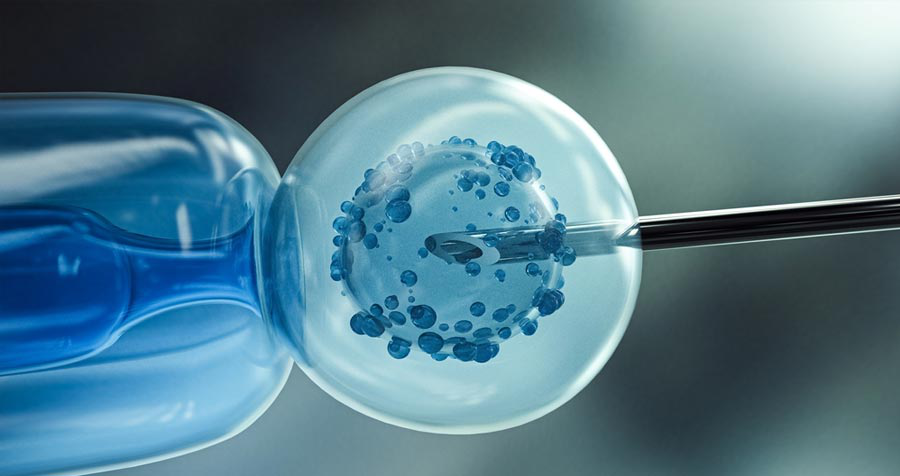

Disruptive technologies don’t just improve existing systems—they revolutionize them. One of the most groundbreaking innovations of our time is CRISPR (Clustered Regularly Interspaced Short Palindromic Repeats), a technology that has completely redefined genetic engineering. With its precision, efficiency, and affordability, CRISPR has rendered traditional gene-editing methods obsolete, offering an unprecedented ability to manipulate DNA with remarkable ease.
Unlike older, more complex techniques like TALENs or zinc finger nucleases—which required intricate protein engineering—CRISPR uses a simple RNA-guided system that’s faster, cheaper, and more adaptable. In fact, CRISPR experiments can be designed and executed in a matter of weeks, at a fraction of the cost of previous methods. This has democratized genetic research, empowering scientists and medical professionals to make discoveries and advances at an astonishing pace.
But the real game-changer? CRISPR’s potential to revolutionize healthcare. From addressing previously untreatable diseases to reshaping the future of medical treatments, CRISPR promises to deliver breakthroughs that could transform lives. With its accessibility and speed, it’s no wonder CRISPR is heralded as a technology poised to reshape not just science, but the very fabric of medicine itself.
In short, CRISPR isn't just a tool for gene editing—it's a disruptive force, pushing the boundaries of what's possible in biotechnology and beyond.
The Science Behind the Breakthrough
DNA Modification in Living Organisms: CRISPR allows scientists to make precise changes to the DNA of living organisms, unlocking new possibilities in genetics and biotechnology.
CRISPR Timeline
1987-2021
1987
First discovery of clustered Regularly Interspaced Short Palindromic Repeats (CRISPR) in E. coli
1993
Similar DNA fragments were found in Haloarcula and Haloferax archaea
2000
The identification of homologous CRISPR fragments in twenty microbial species
2005
The discovery of broader existence of CRISPR foreign viral DNA in CRISPR spacers
2007
The functions of CRISPR were evidenced in lab
2013
CRISPR was engineered as a gene-editing tool
2016
The first application of CRISPR/Cas9 in clinical treatment
2019
CRISPR/Cas9-based HIV1 infection treatment was reported
2020
Emmanuelle Charpentier and Jennifer Doudna were awarded the Nobel Prize, and cancer clinical therapy by Cas9-edited T-cells was reported
2021
The clinical treatment of SCD and B-Thalassemia was reported
Applications of CRISPR
in Human Health
a. Treating Genetic Disorders
CRISPR has shown immense promise in correcting genetic defects. For example:
-
Sickle Cell Anemia: CRISPR is used to reactivate fetal hemoglobin production, alleviating disease symptoms.
-
Hereditary Amyloidosis: CRISPR trials aim to silence faulty genes, preventing harmful protein buildup in the liver.
b. Tackling Infectious Diseases
CRISPR-based bacteriophage therapies target antibiotic-resistant bacteria, a critical global health challenge.
c. Expanding Treatment Possibilities
Ongoing advancements in in vivo editing could make treatments less invasive and more accessible.
While revolutionary, CRISPR faces challenges:
TECHNICAL BARRIERS
Off-target effects, where unintended genes are edited, remain a concern for patient safety.

ETHICAL DILEMMAS
Germline editing sparks debate about designer babies and societal implications of altering human genetics.

ACCESSIBILITY
High costs and limited infrastructure in low-income regions could exacerbate healthcare disparities.
CRISPR's Future Impact
CRISPR's potential extends beyond current applications:
Expanded Scope
Research explores its use in treating muscular dystrophy, retinal disorders, and brain diseases.
Improved Delivery
Technologies like lipid nanoparticles are refining how CRISPR is administered, reducing invasiveness and increasing efficacy.
Precision Medicine
Personalized CRISPR therapies could tailor treatments to individual genetic profiles, marking a new era in medicine.
CRISPR represents a paradigm shift in human health, enabling breakthroughs once thought impossible. By addressing genetic disorders, combating infectious diseases, and pioneering personalized medicine, it challenges traditional medical approaches and fosters a future of unprecedented possibilities. As technical and ethical challenges are resolved, CRISPR is poised to redefine the boundaries of healthcare.